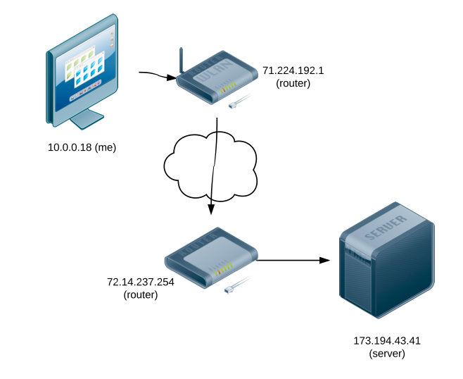
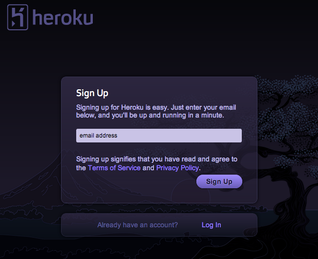
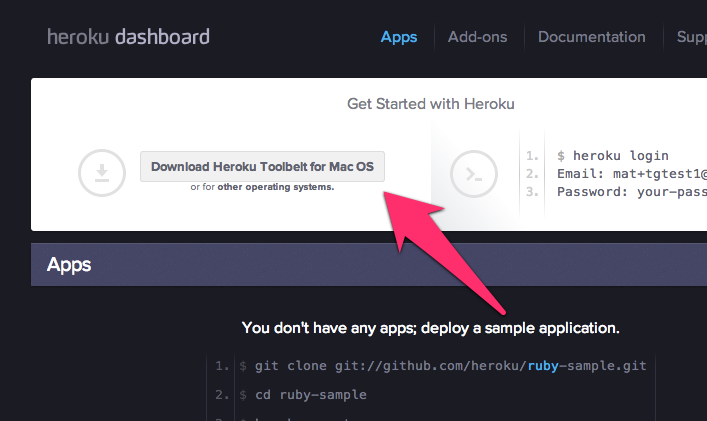
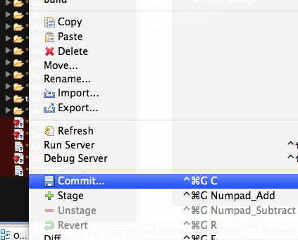
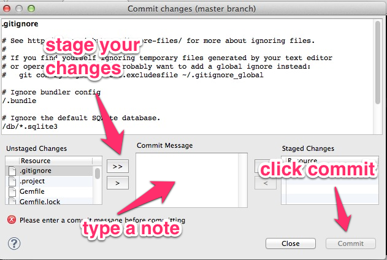

# Web Programming
slides.matschaffer.com/4
# Deployment
* Internet
* Heroku
* Git
## The Internet

# Try it out
In Bash (not 'rails console')
Show google's IP
ping google.com
Show all the IPs!!
traceroute google.com
## One name
* localhost
## Many IPs
* 127.0.0.1
* 0.0.0.0
* ::1
## Heroku gives your app a public name
http://myawesomeapp.herokuapp.com
Make an account on heroku.com

Check your email, install the toolbelt

# Git
* Helps synchronize code
* How we push code to heroku
Start a git repository
git init
Start a commit


# Fix your Gemfile
Gemfile
group :development, :test do
gem 'sqlite3'
end
group :production do
gem 'pg'
end
# Run "bundle"
After every time you change Gemfile
bundle --without production
Commit again
# Create a heroku site
heroku create matsawesomeapp
# Push the code
git push heroku master
# Set up your heroku data
heroku run rake db:migrate
# Check it out!
## Next week:
# views